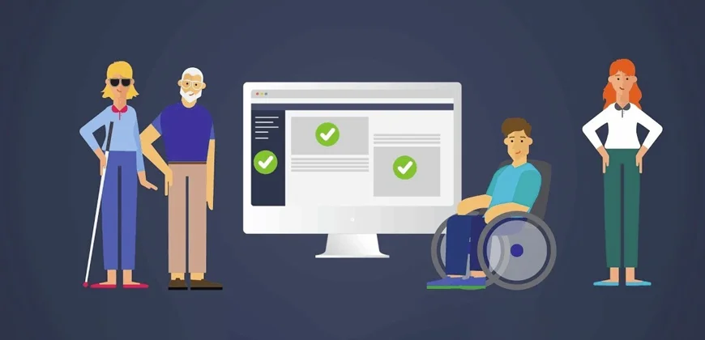
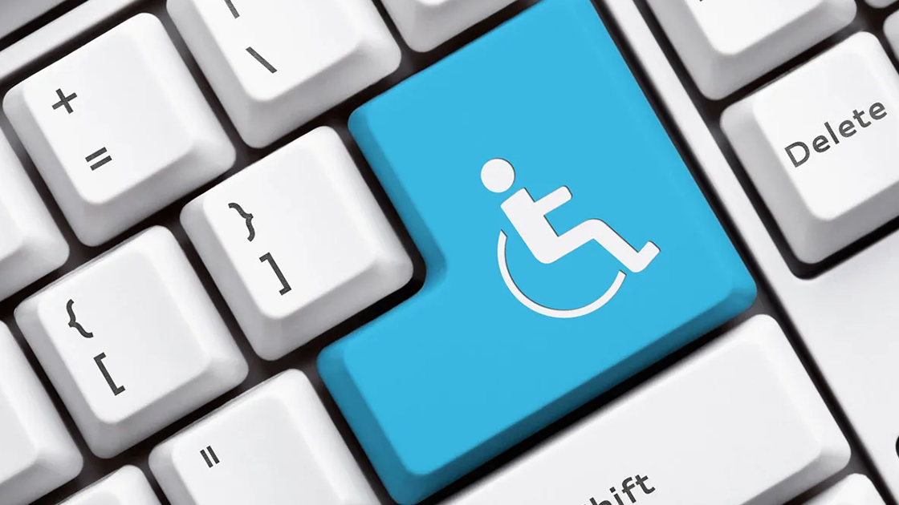

Importância da Acessibilidade Digital
Acessibilidade digital é essencial para garantir que todas as pessoas, independentemente de suas habilidades físicas ou cognitivas, possam acessar e navegar por conteúdos e serviços online. Isso inclui tornar sites mais legíveis para pessoas com deficiências visuais e garantir navegação para pessoas com mobilidade reduzida.

Melhorando a Acessibilidade nos Espaços Públicos
Em espaços públicos, a acessibilidade envolve adaptações como rampas, elevadores e sinalização em braille. Isso garante que pessoas com deficiências possam se deslocar com segurança e de forma independente.
Tecnologias Assistivas: Facilitando o Acesso
Tecnologias assistivas são ferramentas e dispositivos projetados para ajudar pessoas com deficiências a interagir com o mundo ao seu redor. Exemplos incluem softwares de leitura de tela para pessoas com deficiências visuais, dispositivos de controle por voz e teclados adaptados para quem tem mobilidade reduzida.

Acessibilidade na Educação
A acessibilidade na educação envolve adaptar materiais, métodos de ensino e ambientes para garantir que todos os estudantes tenham as mesmas oportunidades de aprendizado. Isso pode incluir desde o uso de legendas em vídeos até a adaptação de provas e atividades para estudantes com deficiências cognitivas.
Acessibilidade no Design de Websites
O design de websites acessíveis é fundamental para garantir que pessoas com diferentes tipos de deficiência possam navegar com facilidade. Isso inclui o uso de contrastes adequados entre texto e fundo, navegação por teclado e o fornecimento de alternativas textuais para elementos visuais, como imagens e vídeos.
Acessibilidade em Dispositivos Móveis
Acessibilidade em dispositivos móveis envolve garantir que aplicativos e websites sejam acessíveis em smartphones e tablets. Isso pode ser alcançado com funcionalidades como zoom, texto legível, uso de voz e atalhos de teclado adaptados para melhorar a navegação de usuários com deficiência.
Benefícios da Acessibilidade para Todos
Acessibilidade não beneficia apenas as pessoas com deficiência, mas também melhora a experiência de todos os usuários. Websites e aplicativos acessíveis são mais fáceis de navegar, possuem melhor desempenho em SEO e alcançam um público maior. Além disso, torna-se um padrão de responsabilidade social das empresas.
Acessibilidade na Experiência do Usuário (UX)
A experiência do usuário acessível é projetada para ser intuitiva para todos, considerando desde a disposição dos elementos na tela até a navegação e os tempos de carregamento. Isso ajuda a tornar as interfaces mais inclusivas, com design pensado para que qualquer pessoa, independentemente de habilidades ou dispositivos, consiga navegar e interagir sem barreiras.

Ferramentas para Teste de Acessibilidade
Existem diversas ferramentas para ajudar desenvolvedores e designers a identificar problemas de acessibilidade em suas interfaces. Ferramentas como Lighthouse, Axe e WAVE realizam auditorias de acessibilidade, detectando questões como baixo contraste, falta de descrições em imagens e problemas de navegação por teclado.
Inclusão e Diversidade no Desenvolvimento Digital
Acessibilidade está fortemente ligada à diversidade e inclusão. Equipes diversificadas trazem perspectivas únicas que ajudam a identificar e solucionar problemas de acessibilidade de maneira mais eficaz. Quando consideramos a inclusão no desenvolvimento de sites e aplicativos, criamos produtos que acolhem a diversidade de usuários e que se ajustam a um mundo digital cada vez mais conectado.